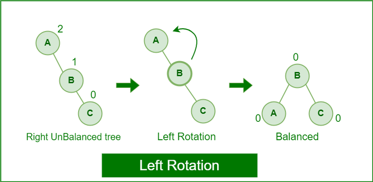

Adelson-Velskii-landis tree¶
AVL tree¶
The AVL tree is named after its inventors, Georgy Adelson-Velsky and Evgenii Landis, who published it in their 1962 paper “An algorithm for the organization of information”.
Note
The above tree is AVL because the differences between the heights of left and right subtrees for every node are less than or equal to 1.
任何节点的左右子树高度相差最多为1
An important part of an AVL Tree is the balancing factor, which describes the difference in the height of the left and the right subtree. Recall that the height is the amount of edges from the node to the deepest node.
We define the balancing factor to be:
int bf = leftHeight - rightHeight
If the balancing factor is greater than 1 or less that -1, then our tree is heavy on one side. To fix this, AVL trees use rotations to shift the nodes from a height of two to a height of one.
non-AVL tree¶
插入节点11后，灰色节点22，和18，违反了AVL tree的平衡条件
由于插入点至跟节点路径上的各个节点可能改变平衡状态，所以，只要
调整其中最深的那个节点，便可以使整棵树重新获得平衡
根据插入点的位置不同，我们可以分为四种情况
插入点位于左子点的左子树（左左）
插入点位于左子点的右子树（左右）
插入点位于右子点的左子树 （右左）
插入点位于右子点的右子树 （右右）
左左和右右称之为外侧（outside）插入，可以采用单旋转操作（single rotation）调整平衡。
左右和右左称之为内测 （inside）插入，可以采用双旋转操作（double rotation）调整平衡。
Left Rotation¶
Right Rotation¶

Left-Right Rotation¶

Right-left rotation¶

Example¶
To maintain the balance in AVL tree, re-balancing is done using ROTATIONS lets insert - 10, 20,30 in AVL Tree.
Order of insertion - 30, 20, 10
Order of insertion - 10, 20, 30
Order of insertion - 30, 10, 20
Order of insertion - 10, 30, 20